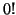
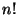
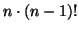

Procedures in Scheme are first class, meaning that they can be passed as arguments, bound to variables and returned as values from other procedures. Arguments are passed by value. Note that the order in which the arguments are evaluated is not defined. We shall now study procedures in further detail.
在 Scheme 里，函数是一等公民，这意味着函数可以作为参数传递给别的函数，可以绑定成变量，也可以作为返回值被别的函数返回。参数通过值来传递。要注意，参数的求值次序并没有定意。
Procedures which call themselves within the body of their lambda expression are said to be recursive. In general, recursive procedures need a terminating condition (otherwise they will run forever) and a recursive step (describing how the computation should proceed).
一个函数在函数调用自身称为递归。通常递归需要设定一个停止条件（否则它将一直运行下去）以及递归步进。
We will use one of MzScheme's procedures trace to illustrate the behaviour of recursive procedures. The procedure trace shows the intermediate steps as the recursion proceeds as well as the intermediate values returned.
我们将使用 MzScheme （现在已更名为 racket）中的一个函数 trace 来追踪一个递归函数的运行过程。trace 显示被追踪的递归函数在运行过程中的中间步骤。
（注）在racket中使用不是核心的一部分，要使用 trace 需要导入 racket/trace 模块：(require racket/trace)。
For example, let us define a procedure for counting the factorial of a number. We know that  equals 1 and we will use this as our terminating condition. Apart from that, we know that  is the same as , which gives us our recursive step. We are now ready to define the procedure itself:
作为例子，让我们定义一个计算阶乘的函数。我们知道 0 的阶乘是 1，我们将把 0 作为停止条件。我们知道 n! = n * (n - 1)!, 这就给了我们递归步进。现在我们已经准备好定义函数了：
(define fact
(lambda (n)
(if (= n 0) ; the terminating condition
1 ; returning 1
(* n (fact (- n 1)))))) ; the recursive step
Let' see what happens if we try to compute the factorial of 7 by using the procedure trace:
我们看看当我们尝试计算 7 的阶乘的时候会发生什么。
> (fact 7) 5040 > (trace fact) (fact) > (fact 7) |(fact 7) | (fact 6) | |(fact 5) | | (fact 4) | | |(fact 3) | | | (fact 2) | | | |(fact 1) | | | | (fact 0) | | | | 1 | | | |1 | | | 2 | | |6 | | 24 | |120 | 720 |5040 5040 > (untrace fact) (fact)
If the recursion is applied over the top-level items of a list it is said to be flatly recursive. For example, if we have a list (1 2 (3 4)) then the top level items are 1, 2 and (3 4).
如果递归仅仅在一个列表的顶级条目上进行，我们称之为 flatly recursive（平坦递归 or 浅递归？）例如，如果我们有一个列表 (1 2 (3 4))，它的顶级条目是 1, 2, (3 4)。
Scheme provides a procedure append, which appends the lists given as arguments. We will now define our own append procedure, which will take two lists as arguments and return a list consisting of these arguments. For example, if we have the lists (a b c) and (d e f), our procedure append would return (a b c d e f) if these lists were given as arguments.
Scheme 提供了一个 append 内置函数，它把参数中的列表附加（合并）在一起，现在我们将定义自己的 append 函数，它接受两个列表作为参数，返回一个合并后的列表。比如，有两个列表 (a b c) 和 (d e f)，如果用这两个列表作参数，我们的 append 将返回 (a b c d e f).
We start by trying to figure out how to append the lists. Clearly, we need to find a way to attach the items of the latter list to the items of the first list. We also need the procedures cons, car and cdr. To construct our list, we will need to build a new list containing the items. The first element of this list will be the first element in the list (a b c) and the last elements will be the elements in (d e f). Since (d e f) is a list, we can construct our list by consing the elements of our first list with our second list. However, we still need to pick out the elements of our first list, one at a time until it is empty. By this we find our terminating condition: when the first list is empty, return the second list. The second list will then be consed to the elements of the list we are constructing, which at this point already contains all the elements of the first list.
我们将尝试演算出如果合并列表。很明显，我们需要找到一个方法把后者的条目附加到前者。我们需要使用 cons ，car 和 cdr 过程。我们需要构建一个新列表来包含所有的条目。（啰嗦！看代码吧）
(define append
(lambda (ls1 ls2)
(if (null? ls1)
ls2
(cons (car ls1) (append (cdr ls1) ls2)))))
To see how this works, let's use trace and see what happens:
要显示它如何工作，让我们使用 trace，看看发生了什么：
> (trace append) (append) > (append '(a b c) '(d e f)) |(append (a b c) (d e f)) | (append (b c) (d e f)) | |(append (c) (d e f)) | | (append () (d e f)) | | (d e f) | |(c d e f) | (b c d e f) |(a b c d e f) (a b c d e f)
Deep recursion is recursion over all of the atomic items of a list structure, i.e. the procedure is applied to the car and cdr of a list. Deep recursion is also referred to as tree recursion. We might have lists containing other lists, e.g. (1 2 (3 4 5)). The list as a whole has nesting level 0, whereas the top level items 1, 2 and (3 4 5) have the nesting level 1. For example, the element 3 in (1 2 (3 4 (5 (6 7)))) has nesting level 2, whereas the element 7 has nesting level 4.
深递归在一个列表的所有原子上进行，一个列表中可能包含其它的列表。深递归总是涉及到树递归（二叉树历遍）。
Let's define a procedure for counting the number of atomic items in a list structure. If the list is empty, it contains 0 elements. If the list is not empty and not a pair, it contains 1 element. Otherwise, it contains the number of elements in its car plus the number of elements in its cdr. We are now ready to define our procedure (also found in SICP p. 109):
让我们写一个函数来对一个列表中的所有原子做计数。如果参数是空列表，它包含0个原子，返回 0，如果参数不是空列表，并且不是 pair 结构，那么它肯定是原子了，计数加 1。如果这两个条件都不成立，那么说明参数是一个非空的列表，首先对 (car ls)做计数，再加上对 (cdr ls)做计数的结果。（可以在SICP 109页找到本例）:
(define count-leaves
(lambda (ls)
(cond ((null? ls) 0)
((not (pair? ls)) 1)
(else (+ (count-leaves (car ls))
(count-leaves (cdr ls)))))))
SICP的这个例子比较不好懂，我自己写了一个：
(define count-leaves
(lambda (l)
(cond ((null? l) 0)
((not (pair? (car l)))
(+ 1 (count-leaves (cdr l))))
(else (+ (count-leaves (car l))
(count-leaves (cdr l)))))))
让我们看看 count-leaves 如何工作:
> (count-leaves '(1 2 3 4)) 4 > (count-leaves '(1 2 (3 4))) 4 > (count-leaves '(1 2 (3 4 (5 6 (7 8) 9 (10 11))))) 11
要查看 count-leaves 的调用和返回值，我们可以使用 trace 函数:
> (trace count-leaves) (count-leaves) > (count-leaves '(a (b c (d e)))) |(count-leaves (a (b c (d e)))) | (count-leaves a) | 1 | (count-leaves ((b c (d e)))) | |(count-leaves (b c (d e))) | | (count-leaves b) | | 1 | | (count-leaves (c (d e))) | | |(count-leaves c) | | |1 | | |(count-leaves ((d e))) | | | (count-leaves (d e)) | | | |(count-leaves d) | | | |1 | | | |(count-leaves (e)) | | | | (count-leaves e) | | | | 1 | | | | (count-leaves ()) | | | | 0 | | | |1 | | | 2 | | | (count-leaves ()) | | | 0 | | |2 | | 3 | |4 | |(count-leaves ()) | |0 | 4 |5 5
A recursive procedure executing an iterative process in constant space is said to be tail-recursive. In other words, instead of having to wait for the computation of recursive procedure calls to return with a value needed, thus having to construct return tables, we are able to define procedures which save the state of a computation in a variable, which, when the terminating condition is reached, will be returned as the final value of the procedure. Iterative procedures are implemented by using tail recursion. This is actually the most important feature to understand together with the fact that the intermediate results of the computation will not be saved in a return table, but in a variable that by the end of the computation will be returned as the final result. Hence, the last thing that a tail-recursive procedure does before terminating is calling itself!
当一个递归程序在常量空间上执行一个迭代称为尾递归。换句话说，不需要等待递归计算返回所需要的值。从而不需要构造返回表，我们可以设计这样一个函数，把计算的中间状态保存在变量中（事实上是保存在参数中，在递归过程中传递给下一次计算），这样，当遇到递归停止条件时可以直接返回最终的结果，而不需要递归回溯。这样，就可以利用递归来实现迭代。多说无益，还是看代码吧。
Let us take a look at the recursive as well as the iterative version of factorial:
;; The recursive version
(define fact
(lambda (n)
(if (= n 0)
1
(* n (fact (- n 1))))))
;;如果你被下面的函数搞晕，可以看我写的版本，SICP里的版本只不过
;;是这个函数的一个包装，它在内层定义了一个用于迭代的子函数 iter
;;理解的关键在于，尾递归把计算的中间结果作为参数传递给下一次递归
;;这样就不需要递归回溯。
(define (fact1 n product counter)
(if (> counter n)
product
(fact1 n (* counter product) (+ counter 1))))
;;当然，这函数比较丑陋，因为调用它时必须加上额外的参数 1 1
;;这样才能把保存中间结果的 product 和计数器 counter 初始化为1
;;(fact1 n 1 1)
;; The iterative version used in SICP p.33
(define (factorial n)
(define (iter product counter)
(if (> counter n)
product
(iter (* counter product)
(+ counter 1))))
(iter 1 1))
;; The iterative version using letrec, equivalent to the one in SICP
(define factorial
(lambda (n)
(letrec ((iter
(lambda (product counter)
(if (> counter n)
product
(iter (* counter product)
(+ counter 1))))))
(iter 1 1)))
;;其实可以用前面讲到的 Named let 写出更漂亮的递归，感觉就跟用C写for循环一样
(define factorial
(lambda (n)
(let iter ((product 1)
(counter 1))
(if (> counter n)
product
(iter (* counter product)
(+ counter 1))))))
What makes the latter procedure iterative is the fact that the variable product will be updated as the computation continues. When the final condition is reached, product will be returned. The update is performed when the procedure is called--as you can see, the variable product is an argument (in this case the first) of iter and when iter is recursively called, it is called with the first argument being (* counter product). If the final condition is reached at this point, this argument will be returned, otherwise another tail-recursive step which updates the product will be taken.
Tail recursion also differs from normal recursion by the fact that the procedure called recursively will not be an argument of another procedure, e.g. multiplication. The recursive step of the recursive fact is the following:
(* n (fact (- n 1))))))
The computation therefore needs to wait for each call to fact to return, after which multiplication is applied. Tail recursion does not share this wasteful defect. The recursive step of the iterative fact is the following:
(iter (* counter product)
(+ counter 1))))))
As we can see, iter calls itself recursively without being an argument to any other procedure, thus not needing to wait for any values to return. It also saves the state of the computation by passing it as an argument and returning the current state as the final state when the terminating condition is reached.
如我们所见，iter 递归调用它自己，不需要任何其它的过程。这样就不须要等待任何返回值。它总是把计算的状态作为参数传递给下一次递归，并且当递归终止的条件触发时直接返回当前状态。
Let's use trace and see the procedures fact and factorial in action:
;; We start with the recursive one > (trace fact) (fact) > (fact 5) |(fact 5) | (fact 4) | |(fact 3) | | (fact 2) | | |(fact 1) | | | (fact 0) | | | 1 | | |1 | | 2 | |6 | 24 |120 120 ;; and compare this to the iterative one > (factorial 5) |(factorial 5) |120 120
Actually, the iterative version performs equally many calls, but the procedure trace does not show them. The following calls are made:
(iter 1 1) (iter 1 2) (iter 2 3) (iter 6 4) (iter 24 5) (iter 120 6) ==> 120
What trace does make clear is the fact that no return tables are needed.
Even if tail recursive procedures are more efficient in most cases, they are not usually as straightforward to implement as recursive ones. It takes some insight and some practice, but the reader is encouraged to try to figure out how to write a recursive procedure tail-recursively.
Scheme 提供了一个相当复杂的迭代结构 do。它指定了一个变量绑定的集合，以及它们怎么初始化，以及在每一次迭代时它们怎么更新。
The syntax of do is the following:
(do ((var1 init1 step1)
...)
(test expr ...)
command ...)
First the init expressions are evaluated in some unspecified order and the results are stored in the bindings of the variables var1... After this the iteration can begin. First test is evaluated. If test is true, the following expressions are evaluated from left to right and the value of the last expr is returned. The iteration then terminates. If test evaluates to false, then the command expressions are evaluated in order for effect. The step expressions are evaluated and the result is stored in the variables var1 ..., which are bound to fresh locations. The next iteration can now begin. Note that it is an error for a variable to occur more than once in the list of variables.
首先，init 表达式会以某种次序求值，结果绑定到 var1...
然后，迭代开始。首先，test 表达式被求值，如果结果为真，紧跟在 test 后面的表达式被从左到右逐一求值，并返回最后一个表达式的值，迭代终止。如果 test 的结果为假，command 表达式被求值，然后 step 表达式被求值，结果再次绑定到变量 var... 下一次迭代开始。
注意，一个变量不止一次出现在变量列表中是一个错误。
For example, the following expression binds the string ``foobar'' to the variable str and the value 0 to the variable i. The variable i will be increased by one for each iteration until i equals the length of str. When this happens, str will be returned, otherwise the character at index i in str will be set to the character b.
例如，下面的表达式把字符串"foobar"绑定到变量 str，把值 0 绑定到变量 i。每一次迭代变量 i 都会自加 1, 直到变量 i 的值等于 str 的长度。当这一切都发生了, str 会被作为返回值返回。
> (do ((str (string #\f #\o #\o #\b #\a #\r))
(i 0 (+ i 1)))
((= i (string-length str)) str)
(string-set! str i #\b))
"bbbbbb"